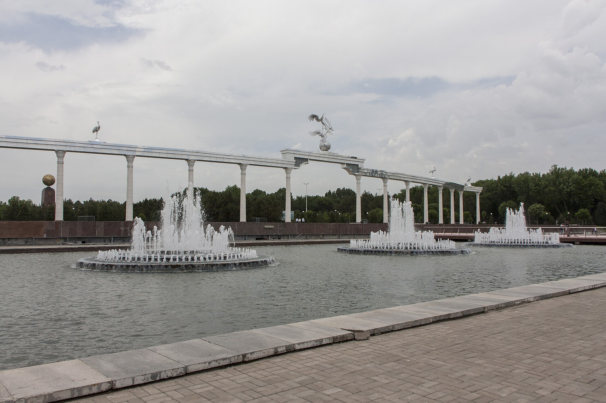

Tashkent's Independence Square and its monument: the making of a symbolic space (1991–2006)
Tashkent's central square was Lenin Square in the Soviet era and became Independence Square (Mustaqillik maydoni) after independence. In 1991 the Lenin statue was removed and replaced by a globe bearing the map of Uzbekistan — the Independence Monument; the 2005–2006 reconstruction added the «Happy Mother» statue and the Ezgulik Arch topped with storks, and the monument was renamed. This guide sets out the square's history solely from reliable sources, treating specific dates cautiously.

Tashkent's central square is one of the key points of the country's symbolic life. In the Soviet era it was called Lenin Square; after Uzbekistan gained independence it became Independence Square (Mustaqillik maydoni) and gradually took on a new symbolic appearance. This guide explains the history of the square and its central monument solely on the basis of reliable sources, treating specific dates cautiously.
The square in the Soviet era
The square was the main administrative and ceremonial square of Soviet Tashkent; the government building (today associated with the Cabinet of Ministers) faces it. According to the sources, the square's name changed over time: first it was Cathedral (Sobornaya) Square, then from around 1930 Red Square, and from 1956 Lenin Square. From 1974 the broad avenue beside the square was used for Soviet military parades and demonstrations.
The Lenin statue and its removal
The large Lenin monument on the square stood on a marble pedestal created in 1974 by the sculptors Sabir Adylov and Nikolai Tomsky (some sources note that an earlier Lenin statue had existed on the site in 1936). When Uzbekistan's independence was declared, the Lenin statue was removed in 1991, while the pedestal remained.

The Independence Monument — the globe
On the 1974 pedestal where Lenin had stood, a metal sphere — a globe bearing the map of Uzbekistan — was installed; this became the Independence Monument (sources date its installation to 1991–1992). In December 2005 a «Happy Mother» statue, holding her infant as a symbol of the Motherland, was added in front of the monument. On 3 February 2006, by decree of President Islam Karimov, the renewed monument was named the «Monument of Independence and Humanism».
The Ezgulik Arch and the storks
The Ezgulik (Good Intentions) Arch at the entrance to the square is a row of marble columns topped by three storks; the storks are seen as a symbol of peace and good intentions. According to the sources the arch was built not in 1996 but during the 2005 reconstruction; it was created by the sculptors Ilhom and Kamol Jabbarov.
Memory Square and the Mourning Mother
Near the square lies a separate memorial complex — Memory Square. There stand the Mourning Mother (Motamsaro ona) statue, the Eternal Flame, and the «Book of Memory» galleries inscribed with the names of Uzbekistanis who died in the Second World War. This complex was established in 1999 on the site of a former Unknown Soldier memorial. It is often regarded as an ensemble separate from Independence Square.
Name and reconstruction
After Uzbekistan's independence was declared on 1 September 1991, «Lenin Square» was renamed Independence Square (Mustaqillik maydoni) in 1992. The full reconstruction of the square was completed in 2006 — it was during these 2005–2006 works that the Ezgulik Arch and the «Happy Mother» statue were added and the central monument was renamed.
Important note
This is fact-based historical information. The dates of some Soviet-era name changes (1930, 1936, 1956) differ somewhat between sources and are given above cautiously; the exact year the globe was installed is also reported differently (1991 and 1992) across sources. For the most reliable information it is advisable to consult publications such as the National Encyclopaedia of Uzbekistan.

Sources
- Wikipedia — «Monument to the Independence of Uzbekistan» (globus-xarita, 1974 poydevor, 2005 «Baxtli ona», 2006-yil 3-fevral farmoni)
- Wikipedia — «Mustaqillik Maydoni» (1992-yilda qayta nomlanishi, 2006-yilda qayta qurish, parad koʻchasi)
- University of Pennsylvania, Russian & East European Studies — «Independence Monument, Tashkent» (Lenin 1991-yilda olib tashlangani, ramz)
- Tours to Uzbekistan — «The Square of Memory» (Motamsaro ona, Abadiy olov, Xotira kitobi — 1999-yil)